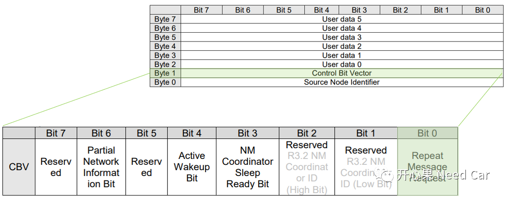
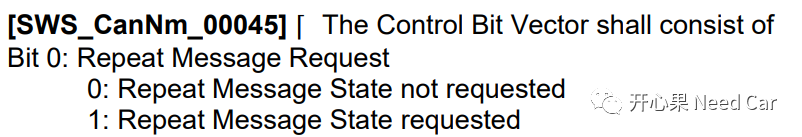
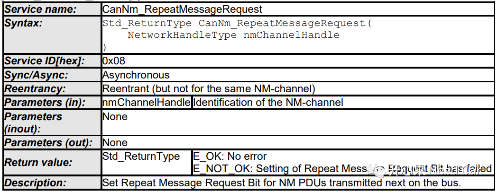
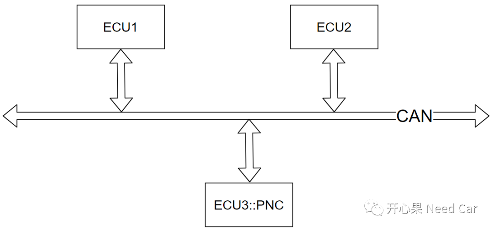
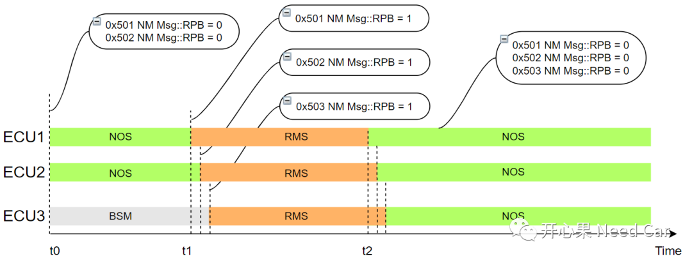

如标题：RPB(Repeat Message Request Bit）干啥用的？此问题源于群内小伙伴的讨论，本文将该问题带来的思考分享给大家。
提示：基于Can总线讨论
首先，确定一下RPB的位置，RPB在CBV字节的Bit0，如下所示：

RPB的作用是什么呢？看一下Autosar的官方解释，如下所示：

接收：如果接收到的网络管理报文中，RPB = 1，请求当前的节点进入RMS状态。 发送：如果本节点的上层逻辑主动请求进入RMS，则会主动调用接口CanNm_RepeatMessageRequest()，之后本节点外发的网络管理报文中RPB = 1。提示：RPB置位与否的操作需要静态配置CANNM_NODE_DETECTION_ENABLED参数。
CanNm_RepeatMessageRequest()接口声明如下所示：


ECU1进入RMS状态，ECU1发送的网络管理报文中，PNI(Partial Network Information Bit)置位（PNI = 1），且关联ECU3的PNC_ECU3 = 1，ECU3网络被唤醒；
且RPB = 1，随即ECU2和ECU3进入RMS状态；
ECU2和ECU3发送的网络管理报文中，RPB = 1，且稍微晚于ECU1。
如下所示：

注意：同一网段内的所有节点，对应的CANNM_MSG_CYCLE_TIME、CANNM_REPEAT_MESSAGE_TIME、CANNM_WAIT_BUS_SLEEP_TIME、NM-TIME_OUT时间参数需要保持一致，以便于网段内所有节点在近似相等的时间内进入相同的网络状态。
综上述：RPB具有协调不同ECU节点状态切换的作用，以便于网段内所有节点在近似相等的时间内进入相同的网络状态。
RPB是否还有其他使用场景？期待你不同的看法。

参考资料
SIMPLE TITLE
往期精彩回顾